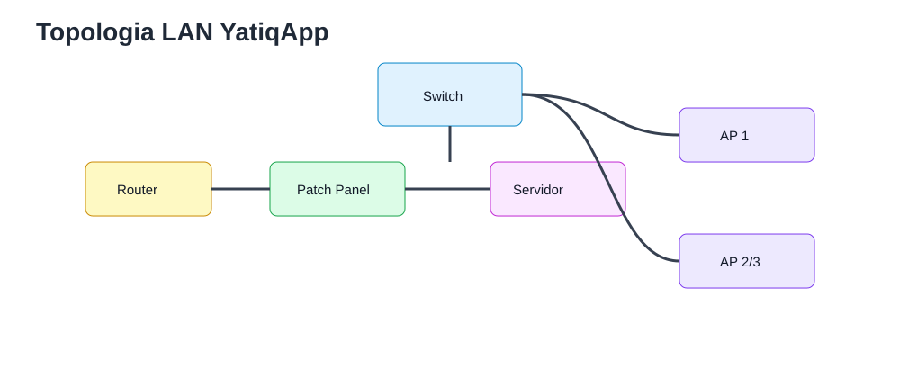
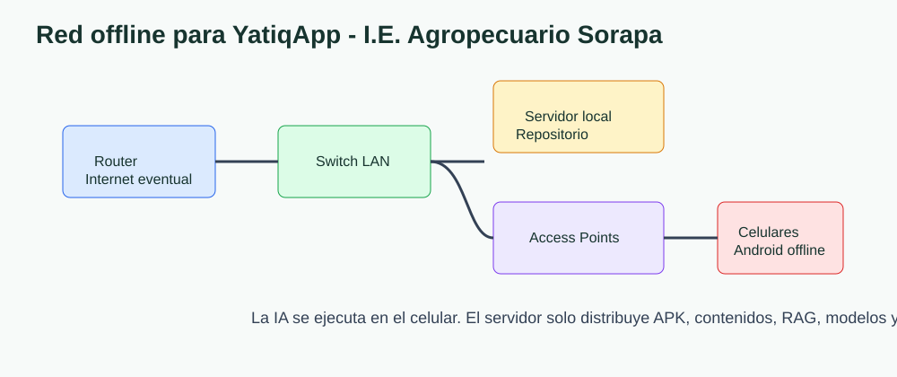
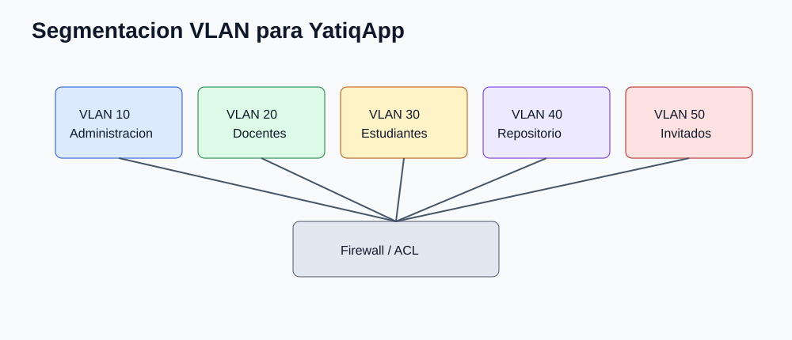
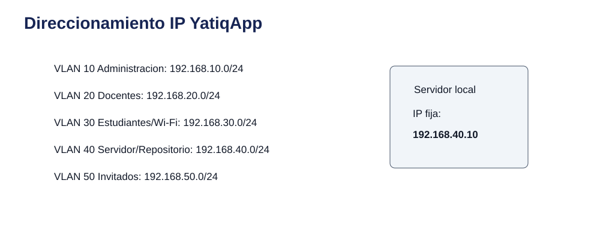
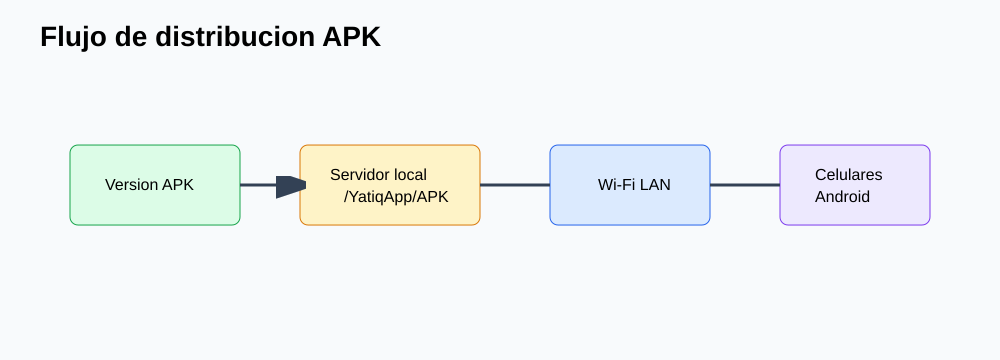

CE0311 - Entregable 1: Diseño de Red
| Campo | Detalle |
|---|---|
| Universidad | Universidad Peruana Unión |
| Escuela Profesional | Ingeniería de Sistemas |
| Asignatura | Perfil de Egreso 2026 |
| Línea | CE03 Infraestructura Tecnológica |
| Proyecto | YatiqApp |
| Caso de estudio | I.E. Agropecuario Sorapa |
| Entregable | CE0311 - Entregable 1: Diseño de Red |
| Código de competencia | CE0311 |
| Responsable | Anyelo Jhans Sarmiento Larico |
| Semestre | 2026-I |
| Fecha | Julio de 2026 |

| Información | Detalle |
|---|---|
| Institución | I.E. Agropecuario Sorapa |
| Distrito | Juli |
| Provincia | Chucuito |
| Región | Puno |
| Gestión | Pública |
| Nivel | Secundaria |
| Área | Rural |
| Estudiantes | 32 aprox. |
| Docentes | 9 aprox. |
| Secciones | 5 aprox. |
Descripción
Este entregable presenta el diseño de red local para la I.E. Agropecuario Sorapa como infraestructura tecnológica de soporte para YatiqApp. El propósito es disponer de una LAN sencilla, segura y mantenible que permita conectividad interna, distribución offline de la APK, acceso local a recursos educativos, administración del repositorio escolar y operación en un contexto rural con Internet limitado o intermitente.
YatiqApp funciona offline en celulares Android. La IA se ejecuta en el celular; el servidor local no procesa IA ni reemplaza la arquitectura On-Device. Dentro de CE03, la red cumple una función de soporte: comunica router, switch, servidor local, access points, docentes, estudiantes y administración para distribuir recursos, respaldar contenidos y operar aunque no exista Internet.
Resumen Ejecutivo
La propuesta considera una topología estrella extendida con router, switch gigabit 16/24 puertos, patch panel, rack mural, UPS, servidor local como repositorio, disco externo para backup y 2 o 3 access points. La red se diseña para un colegio público rural pequeño, por lo que evita soluciones empresariales sobredimensionadas como clústeres, SAN, múltiples enlaces redundantes o servicios cloud obligatorios.
El diseño segmenta la LAN mediante VLAN para separar administración, docentes, estudiantes/Wi-Fi, servidor/repositorio e invitados. Se usa direccionamiento privado por subredes /24, fácil de documentar y administrar. No se implementa DMZ porque el colegio no publica servicios hacia Internet y YatiqApp conserva funcionamiento offline.
Alcance del Entregable
Incluye
- Infraestructura de soporte para YatiqApp.
- Red local LAN cableada e inalámbrica.
- Micro centro de datos como punto de comunicaciones.
- Servidor local como repositorio.
- Seguridad de red mediante VLAN, firewall básico y control de acceso.
- Backup mediante servidor local y disco externo.
- Distribución offline de APK, contenidos, modelos optimizados y recursos RAG.
- Operación rural con Internet eventual.
No incluye
- Desarrollo completo de la app móvil.
- Entrenamiento completo del modelo IA.
- Inferencia cloud.
- Ejecución de IA en el servidor.
- Integración directa con SIAGIE.
- Despliegue nacional.
Supuestos
- El colegio cuenta con conectividad limitada o intermitente.
- Los estudiantes y docentes pueden usar celulares Android.
- YatiqApp funciona offline.
- El servidor local funciona como repositorio.
- Internet se usa solo de forma eventual para mantenimiento, descarga de actualizaciones o soporte.
Restricciones
- Presupuesto limitado.
- Hardware básico.
- Energía eléctrica variable.
- Pocos equipos tecnológicos.
- Contexto rural.
Levantamiento de Requerimientos
| Tipo | Requerimiento | Prioridad | Justificación |
|---|---|---|---|
| Técnico | Conectar router, switch, servidor y AP en una LAN administrable. | Alta | Es la base para distribuir YatiqApp y recursos educativos. |
| Técnico | Soportar Wi-Fi para celulares Android. | Alta | Los usuarios finales acceden desde dispositivos móviles. |
| Técnico | Separar tráfico por VLAN. | Alta | Reduce riesgos entre administración, estudiantes y servidor. |
| Técnico | Mantener funcionamiento local sin Internet. | Alta | El colegio opera en zona rural con conectividad variable. |
| Académico | Acceder a contenidos Quechua, Aymara y castellano. | Alta | YatiqApp tiene enfoque bilingüe e intercultural. |
| Académico | Distribuir APK y actualizaciones desde el servidor local. | Alta | Evita depender de tiendas o nube durante clases. |
| Administrativo | Proteger documentos institucionales y backups. | Alta | El servidor también conserva evidencias y respaldos. |
| Administrativo | Facilitar mantenimiento por docente encargado o responsable TIC. | Media | La solución debe ser sostenible localmente. |
Inventario Tecnológico Existente
| Equipo | Cantidad | Uso en la red |
|---|---|---|
| Router | 1 | Puerta de enlace e Internet eventual. |
| Switch Gigabit 16/24 puertos | 1 | Interconexión LAN. |
| Patch Panel | 1 | Ordenamiento del cableado. |
| Rack mural | 1 | Protección física de equipos. |
| UPS | 1 | Continuidad eléctrica básica. |
| Computadora servidor | 1 | Repositorio local de YatiqApp, contenidos y backups. |
| Disco duro externo | 1 | Copias de seguridad. |
| Access Point Wi-Fi | 2 o 3 | Conexión de celulares y equipos docentes. |
Diseño de Topología Física
La topología física centraliza los equipos en el rack mural del micro centro de datos. El router se conecta al switch; el switch distribuye enlaces hacia patch panel, servidor local y access points. Los celulares Android acceden por Wi-Fi local para descargar APK, paquetes de actualización y contenidos educativos.

Diseño de Topología Lógica
La topología lógica separa funciones para proteger recursos y ordenar el tráfico. El servidor/repositorio queda en una VLAN propia; administración y docentes tienen acceso controlado; estudiantes usan Wi-Fi aislado para recursos educativos.

Segmentación VLAN
| VLAN | Nombre | Red |
|---|---|---|
| 10 | Administración | 192.168.10.0/24 |
| 20 | Docentes | 192.168.20.0/24 |
| 30 | Estudiantes/Wi-Fi | 192.168.30.0/24 |
| 40 | Servidor/Repositorio | 192.168.40.0/24 |
| 50 | Invitados | 192.168.50.0/24 |

Direccionamiento IP y Subnetting
| VLAN | Gateway | Rango DHCP sugerido | Reservas |
|---|---|---|---|
| 10 | 192.168.10.1 | 192.168.10.50-192.168.10.150 | Dirección y Secretaría. |
| 20 | 192.168.20.1 | 192.168.20.50-192.168.20.150 | Docentes. |
| 30 | 192.168.30.1 | 192.168.30.50-192.168.30.220 | Celulares de estudiantes. |
| 40 | 192.168.40.1 | 192.168.40.50-192.168.40.100 | Servidor local en IP fija 192.168.40.10. |
| 50 | 192.168.50.1 | 192.168.50.50-192.168.50.120 | Invitados temporales. |
Se usan subredes /24 por claridad administrativa. Aunque la cantidad de usuarios es pequeña, el patrón facilita soporte, documentación y crecimiento moderado.

DMZ
No se implementa DMZ porque el colegio no publica servicios hacia Internet. YatiqApp funciona offline y el servidor local solo actúa como repositorio interno de APK, contenidos, modelos optimizados para distribución, recursos RAG, manuales, evidencias, backups y actualizaciones. Publicar servicios agregaría riesgo y complejidad sin necesidad pedagógica.
Redundancia y Disponibilidad
| Elemento | Medida realista | Beneficio |
|---|---|---|
| Energía | UPS para router, switch y servidor. | Permite continuidad breve y apagado seguro. |
| Configuración | Backup de router, switch y AP. | Reduce tiempo de recuperación. |
| Wi-Fi | 2 o 3 access points. | Mejora cobertura y continuidad básica. |
| Datos | Copia en servidor y disco externo. | Protege contenidos y evidencias. |
| Operación | Manual de red y etiquetado. | Facilita mantenimiento local. |
Cumplimiento de Estándares
| Estándar | Aplicación |
|---|---|
| IEEE 802.3 | Ethernet cableado en switch y servidor. |
| IEEE 802.11 | Wi-Fi local para celulares Android. |
| IEEE 802.1Q | Segmentación VLAN. |
| TIA/EIA-568 | Cableado estructurado y terminación. |
| TIA/EIA-569 | Canalizaciones y espacio de telecomunicaciones. |
| ISO/IEC 11801 | Cableado genérico y orden físico. |
Relación del Diseño de Red con YatiqApp
| Necesidad de YatiqApp | Soporte desde la Red |
|---|---|
| Funcionamiento offline | Wi-Fi local y contenidos embebidos en celulares |
| Distribución de APK | Servidor local como repositorio |
| Actualización de contenidos | Red LAN y sincronización eventual |
| Uso en celulares | Access Points Wi-Fi |
| Seguridad de recursos | VLAN, firewall y control de acceso |
| Respaldo | Servidor local y disco externo |
| Acceso sin Internet | Red local independiente de la nube |
La red LAN permite compartir recursos, distribuir la APK y administrar contenidos. Sin embargo, YatiqApp sigue funcionando aunque no exista Internet porque la app, los contenidos principales y la inferencia de IA se ejecutan en el celular Android.

Conclusiones
- El diseño de red responde a la realidad de una institución pública rural pequeña.
- La topología estrella extendida facilita mantenimiento y diagnóstico.
- La LAN permite distribuir YatiqApp sin depender de Internet.
- La segmentación VLAN protege administración, docentes, estudiantes y repositorio.
- El servidor local cumple función de repositorio, no de procesamiento de IA.
- El direccionamiento /24 facilita documentación y soporte.
- La ausencia de DMZ es técnicamente adecuada porque no se publican servicios.
- El uso de estándares mejora orden, interoperabilidad y sostenibilidad.
Recomendaciones
- Etiquetar puertos de switch, patch panel y puntos de red.
- Asignar IP fija al servidor local de YatiqApp.
- Separar SSID docente, estudiantil e invitados.
- Mantener claves Wi-Fi bajo control institucional.
- Respaldar configuraciones de router, switch y AP.
- Probar descarga local de APK antes de cada jornada de actualización.
- Revisar cobertura Wi-Fi en aulas y patio antes del piloto.
- Documentar cambios de VLAN, IP y contraseñas.
Anexos
| Anexo | Recurso | Relación |
|---|---|---|
| A | Funcionamiento local sin Internet. | |
| B | Diseño físico lógico de red. | |
| C | Separación por VLAN. | |
| D | Plan IP y subredes. | |
| E | Distribución offline. |
Referencias
Institute of Electrical and Electronics Engineers. (2022). IEEE 802.3 Ethernet standard. IEEE.
Institute of Electrical and Electronics Engineers. (2020). IEEE 802.11 wireless LAN standard. IEEE.
Institute of Electrical and Electronics Engineers. (2022). IEEE 802.1Q bridges and bridged networks. IEEE.
International Organization for Standardization. (2017). ISO/IEC 11801 information technology: Generic cabling for customer premises. ISO.
Telecommunications Industry Association. (2018). ANSI/TIA-568 structured cabling standard. TIA.
Telecommunications Industry Association. (2019). ANSI/TIA-569 telecommunications pathways and spaces. TIA.
Rúbrica de Evaluación
| Criterio Oficial | Evidencia en el Entregable | Nivel | Justificación |
|---|---|---|---|
| Diseño de red | Topología física, lógica, VLAN, IP y subnetting. | Excelente | La propuesta es completa, realista y alineada a CE03. |
| Soporte a YatiqApp | Tabla de relación, flujo APK y enfoque offline. | Excelente | La red soporta distribución y operación sin atribuir IA al servidor. |
| Seguridad y disponibilidad | VLAN, firewall básico, UPS, backups y control Wi-Fi. | Excelente | Los controles son proporcionales al colegio rural. |
| Estándares | IEEE, TIA/EIA e ISO/IEC aplicados al caso. | Excelente | Las normas se relacionan con decisiones concretas del diseño. |